前言
趁着过年前这段时间能抽点空出来，我决定开始看C#。（20190109）
C#和.Net框架
微软平台的编程发展
- 编程语言使用Visual Basic c/c++
- 20世纪90年代末Win32API MFC COM(组件对象模型)
- 2002发布第一个.NET框架（多平台，行业标准，安全性）
专业术语
- BCL(Base Class Library)基类库：
BCL包括：
(1)通用基础类——文件操作、字符串操作···
（2）集合类——列表、字典···
（3）线程和同步类——多线程程序
（4）XML类——创建、读取以及操作XML文档
我们就是编写类库，在编写类库的过程中使用BCL基础类库中的方法。在IDE中编写的代码经过编译后连同BCL基础类库一起在CLR公共语言运行库中运行。
编译和运行过程：
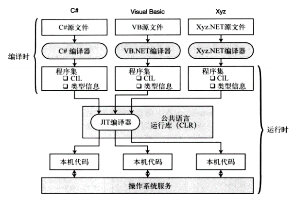
源文件->编译器->程序集->在CLR运行环境中用JIT编译器生成本机代码->本机代码即可和操作系统进行交互
CLR概览：
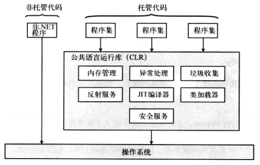
托管代码是.Net框架编写的代码，需要在CLR的环境下运行。如程序中定义的变量，变量内存的申请和释放及管理是由CLR公共语言运行库进行管理。
非托管代码不在CLR控制之下，比如
Win32 C/C++ DLL 称为非托管代码。
C#版HelloWorld分析
新建C#控制台程序
文件->新建->项目->Visual C#->Windows桌面->控制台应用（.Net Framework）
1 | 》小卡片《 |
1 | using System; |
C#程序结构分析
1、引入命名空间。使用到的命名空间是亮色，如using System;未使用的命名空间是暗色的。
2、定义命名空间namespace ConsoleApp1；命名空间名ConsoleApp1。
3、定义类。
4、定义方法，Main方法,只允许一个。
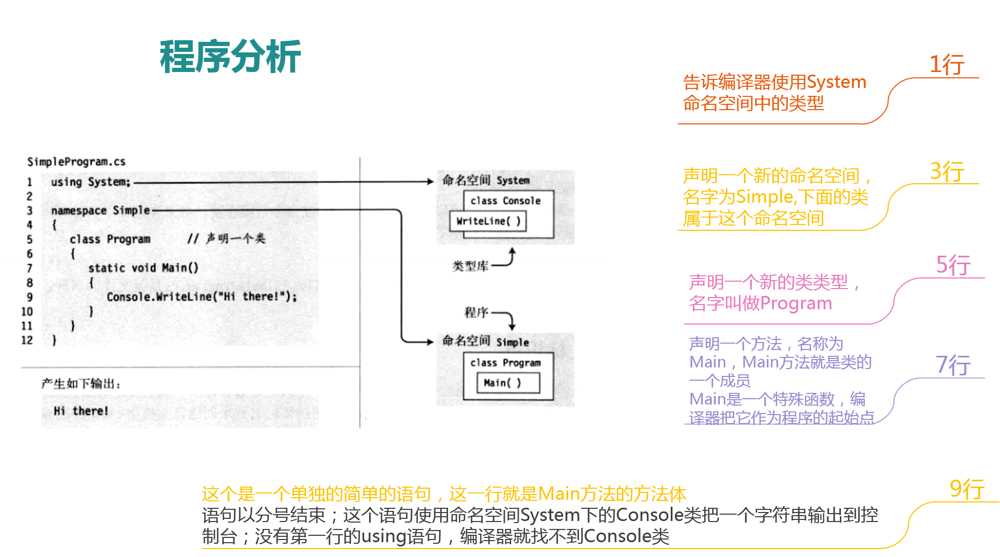1
2
3 》小卡片《
Ctrl+X 剪切
Ctrl+
C#语法
C#基础语法
1、标识符：字母 下划线 数字（数字不能放首位）（@字符只能放首位）
2、命名规范：变量使用Camel命名，方法和类使用Pascal命名。
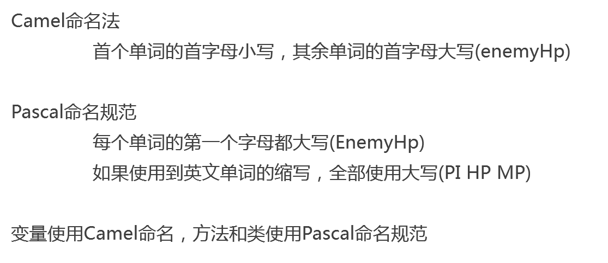
3、关键字：所有C#关键字全部由小写字母组成。
4、Main方法：①每个C#程序的可执行起始点在Main中的第一条指令；②Main方法首字母大写；③Main方法形式static void Main(string[] args){}
5、块是一个由大括号包围起来的0条或多条语句序列，它在语法上相当于一条语句。
{
int var1 = 5;
System.Console.WriteLine(“The value of var1 is {0}”,var1);
}
块的内容：
- 某些特定的程序结构只能使用块
- 语句可以以分号结束，但块后面不跟分号
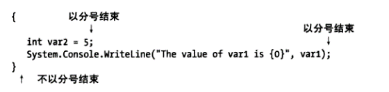
6、控制台窗口是一个简单的命令提示窗口，允许程序显示文本并从键盘接受输入。
BCL提供一个Console类（在System命名空间下）,该类包含了输入和输出到控制台窗口的方法。
Write是Console类的成员，它把一个文本字符串发送到程序的控制台窗口。
最简单的使用，Write把文本字符串字面量发送到窗口，字符串必须使用双引号括起来。实例：
Console.Write(“This is a trivial text.”);
注意输出时Write没有在字符串后面添加换行符
注意：若没有指定命名空间，可以写成如下。
System.Console.Write(“This is a trivial text.”);
WriteLine是Console的另外一个成员，它和Write实现相同的功能，但会在每个输出字符串的结尾添加一个换行符。
7、格式化字符串
Console.WriteLine(格式字符串(含替代标记),替换值0，替换值1，替换值2，····)；
Console.WriteLine(“两个数相加{0}+{1}={2}”,3,34,34);
多重标记和值
下面的语句使用了3个标记，但只有两个值：
Console.WriteLine(“Three integers are {1},{0} and {1}”,3,5);
Three integers are 5,3 and 5
但是记住标记不能引用超出替换值列表长度以外位置的值
注意：标记{1}，前后不能有空格，错误示例，{ 1 }、{ 1}、{1 }
8、Write(各种类型)write可以输出各种类型，如：
int age=10;
string name=”1233”;
Console.WriteLine(age);
Console.WriteLine(name);
9、让程序暂停方法：
Console.ReadKey();
10、C#中类型
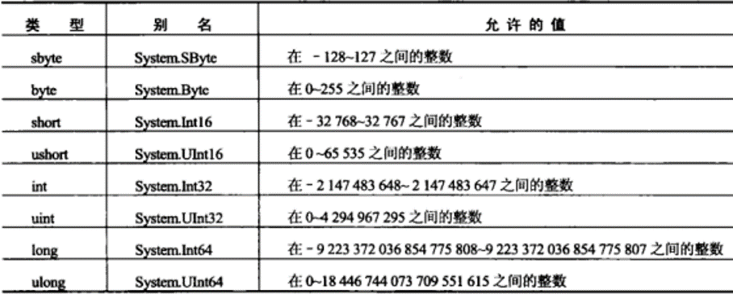
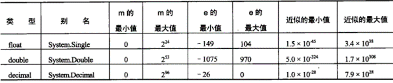
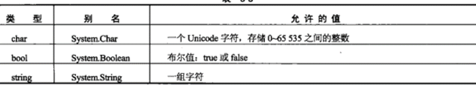
11、字面值
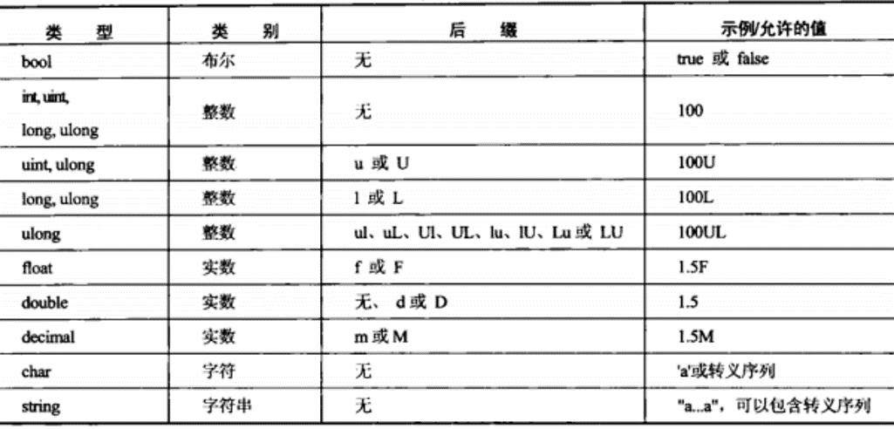
12、char和string
char表示一个字符，字母、数字、@#￥%……&*（）一个汉字。
string是一个char的数组。
13、转义字符表
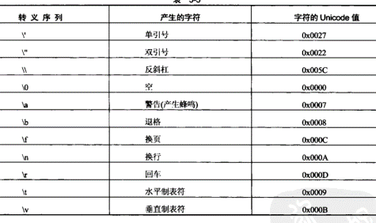
14、字符的Unicode值
Unicode是一个16进制的数字，表示这个字符在内存中以哪个数字存储。也可以使用Unicode来代表一个转义字符 (\u加上十六进制值)
“I\’s siki!”
“I\u0027s siki!”
15、使用@不识别转义字符
如果我们不想去识别字符串中的转义字符，可以在字符串前面加一个@符号（除了双引号其他转义字符都不在识别）
举例：
“I’m a good man. \n You are bad girl!”
@”I’m a good man. \n You are bad girl!”
@”I’m a good man. \n “”You are bad girl!”
使用两个引号表示一个引号
@字符的两个作用示例：
1）默认一个字符串的定义是放在一行的，如果想要占用多行
2）用字符串表示路径”c:\xxx\xx\xxx.doc”使用@”c:\xxx\xx\xxx.doc”更能读懂
16、多变量声明和赋值
我们可以使用一条语句声明多个类型一样的变量string name1,name2;
在多变量声明中，可以在变量后面跟上=，对其中的一个变量或者部分或者全部变量进行初始化。
17、运算符
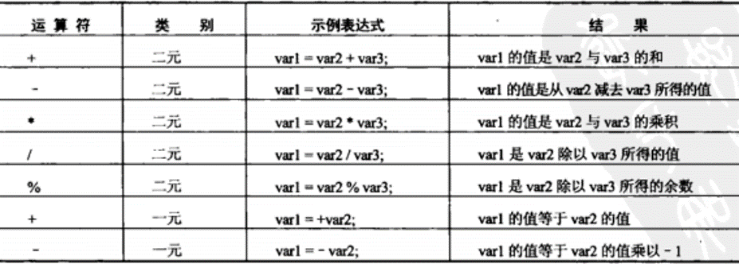
- 最后的两个单独的+和-相当于正负
- 数学运算符只能处理数字除了字符串相加
- char可以用来做数学运算
- char变量实际现在内存中存
储的是数字
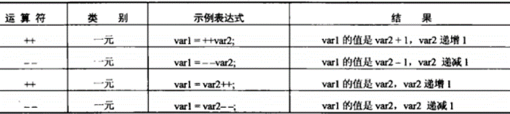
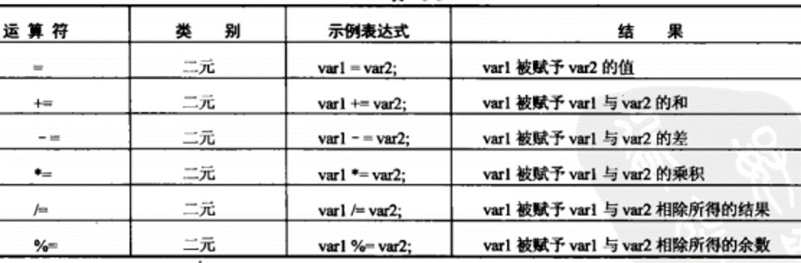
18、Console.ReadLine()方法，这个方法可以从键盘上读取一行的字符串输入，返回的是一个字符串。
19、类型转换
把一个整形数字的字符串转成一个整形。
string str=”234324”;
int i = Convert.ToInt32(str);
把一个浮点类型的字符串转成一个浮点类型。
float f=Convert.ToFloat(“34.34”);
20、优先级
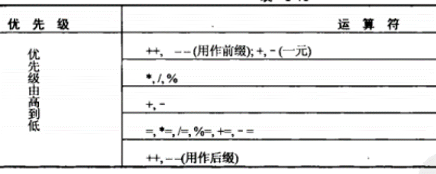
21、布尔运算符
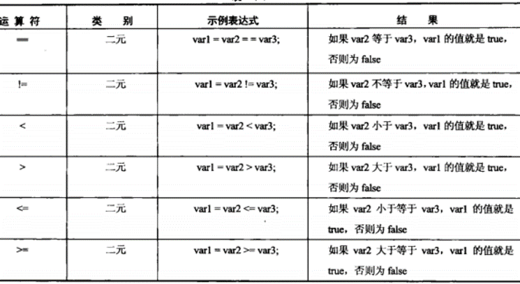
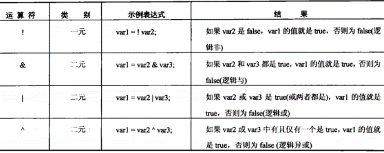
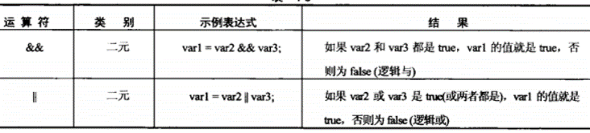
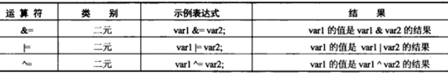
22、goto语句的语法
goto <\labelName>;
标签定义
<\labelName>:
23、三元运算符
语法
<\test> ? <\resultIfTrue> : <\resultIfFalse>
24、switch的语法结构1
2
3
4
5
6
7
8
9
10
11
12
13
14
15switch (<testvar>){
case <comparisonVal1>:
<code to execute if <testvar> == <comparisionVal1>>
break;
case <omparisonVal2>:
<code to execute if <testvar> == <comparisionVal2>>;
break;
...
case <comparisionN>:
<code to execute if <testvar>==<comparisionValN>>;
break;
default:
<code to execute if <testvar>!=<comparisionVals>>
break;
}
<\testvar> 这里不管直接放一个字面值还是变量，它的类型是数值类型跟char类型
switch注意点
- switch与goto结合：
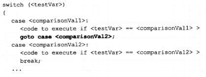 - switch与case结合：
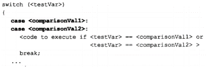
25、break和continue
break立即跳出循环；
continue，只会终止当次循环，继续运行下次循环。
26、C#中类型转换
- 隐式转换
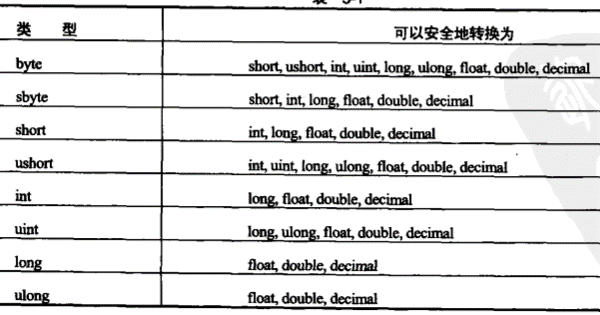
- 显示转换
short j = (short)i;
- 使用Convert命令进行显示转换
（将一个数字字符串转换成一个数字类型（整形或者浮点型），就要用到Convert里面的方法）
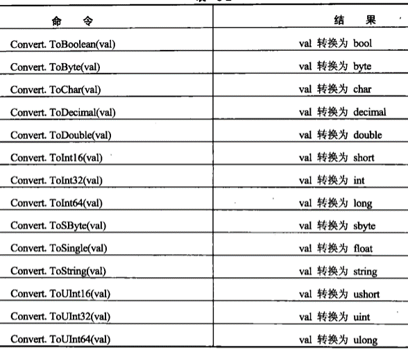
27、枚举类型
enum <\typeName> : <\underlyingType>
{
<\value1>,
<\value2>,
<\value3>,
…
<\valueN>
}
枚举类型的声明 <\typeName> <\varName>;
枚举类型的赋值 <\varName>= <\typeName>.<\value>;
默认情况下枚举类型中的值从0开始,我们可以直接在枚举类型定义的时候 使用=运算符给每一个枚举指定一个特定的值。
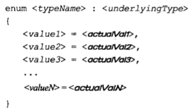
28、结构体
struct <\typeName>{
<\memberDeclarations>
}
29、数组
- 数组的声明
<\baseType>[] <\name>;
数组是一个变量的索引列表，这个索引是一个整数，第一个条目的索引是0，第二个是1，以此类推…
int[] scores; 声明了分数的数组(int类型的数组) - 数组初始化
int[] scores;
第一种方式
scores ={34,34,3,43,43,4,34};
第二种方式
scores = new int[10]; 里面的每一个元素按照类型的默认值赋值
第三种方式
scores = new int[10]{123,12,34,56,77,89,85,6,45634,34}; - 数组的访问
<\arrayName>[条目索引]
- 数组的遍历
1
2
3
4
5
6
7
8
9
10
11
12>第一种方式for
for(int i =0;i<array.Length;i++){
}
第二种方式while循环
int i=0;
while(i<array.Length){
//use array[i]
i++;
}
第三种方式foreach
foreach(int temp in array){
}
30、字符串的处理
字符串可以当做字符char类型的数组,可以通过数组遍历字符串的每一个字符。
name[index]访问指定字符串指定索引位置处的字符
str.Length访问到字符串的长度（有多少个字符）
关于字符串处理的一些方法：
（1）ToLower() ToUpper()
（2）Trim() TrimStart() TrimEnd()
（3）Split()
31、函数的定义及使用
- 定义函数
static <\returnType> <\FunctionName> (<\parameType> <\paramName>, …){
…;
return <\returnValue>;
}
用例：
static void Write(){
Console.WriteLine(“Text output from function .”);
}
static void Main(){
Write();
}
32、委托(delegate)
- 委托
委托是一种存储函数引用的类型。
委托的定义指定了一个返回类型和一个参数列表。
定义了委托之后，就可以声明该委托类型的变量，接着就可以把一个返回类型跟参数列表跟委托一样的函数赋值给这个变量。
委托的使用分两步：
定义
声明（变量）
结构体，枚举的使用同上都分为定义和声明
整数类型数组类型字符串类型都是直接声明变量的，因为类型的定义已经完成了（CLR中已经完成定义）。
- 委托的使用
delegate double MyDelegate(double param1,double param2); static double Multiply(double param1,double param2){ return param1*param2; } static double Divide(double param1,double param2){ return param1/param2; } double param1 = 34; double param2 =2; MyDelegate de; de = Multiply; de(param1,param2); de = Divide; de(param1,param2);
C#中异常语法
try … catch … finally
异常的定义已经在CLR中定义好了。如果不去处理这个异常，那么当异常发生的时候，程序会终止掉，然后异常后面的代码都无法执行。
try{
…
}
catch(e ){
…
}
finally{
}
其中catch块可以有0或者多个，finally可以有0或者1个
但是如果没有catch块，必须有finally块，没有finally块，必须有catch块，catch块和finally块可以同时存在。
（1）try块包含了可能出现异常的代码(一条或者多条语句)。
（2）catch块用来捕捉异常，当代码发生异常，那么异常的类型和catch块中的类型一样的时候，就会执行该catch块，如果catch块的参数不写，表示发生任何异常都执行这个catch块。
（3）finally块包含了始终会执行的代码，不管有没有异常产生都会执行。
（4）throw new Exception();
运用VS调试C#程序
- 调试窗口
中断模式下的窗口（左下角），不但可以观察变量值的变化，还可以直接去修改。
右下角看到调用堆栈和即时窗口。在调用堆栈窗口下我们可以观察到当前代码执行到哪一行了，并且可以看到这个代码的是被什么语句调用的；即时窗口我们可以在这里输入一些命令，查看变量的值，修改变量的值，可以输入表达式查看结果。 - 单步执行
逐过程遇到函数，不会进入函数内部，而把函数当成一条语句去执行。